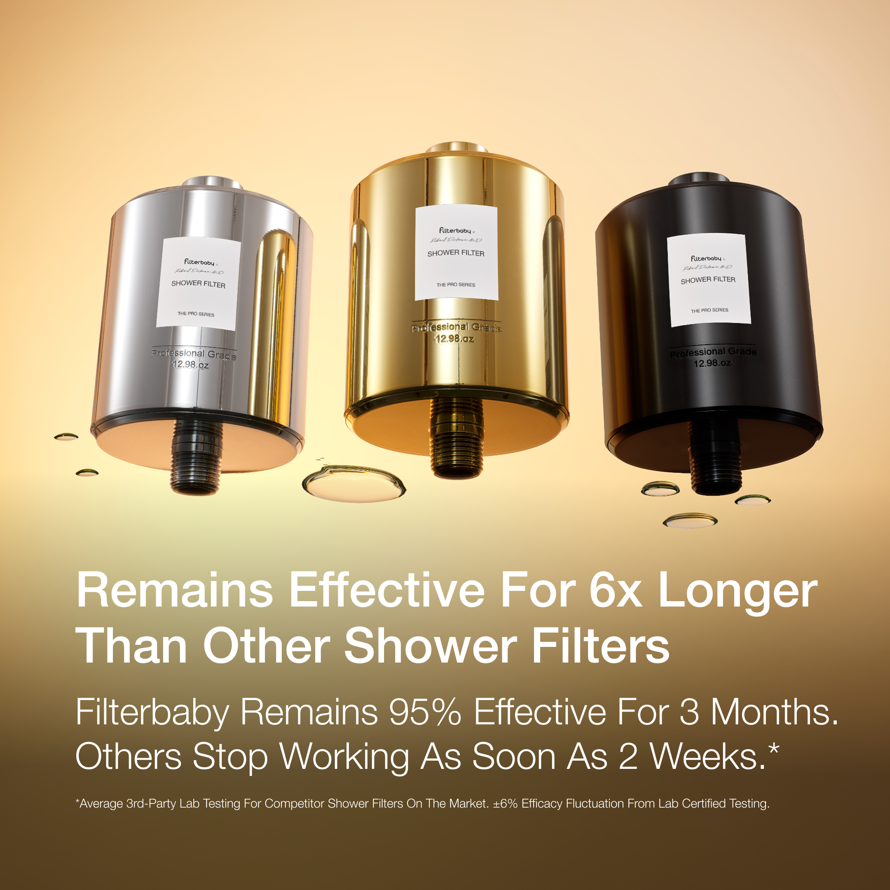

The Creative
Ads we briefed, built & scaled
From authority-driven static ads to scroll-stopping UGC video — here's a look at the creative that actually performed.
FB
Filterbaby
Sponsored
•••

❤️ 2.4K
💬 187
🔁 56
Authority-first. Whitelisted from a real dermatologist.
Static · Authority
FB
Filterbaby
Sponsored
•••

❤️ 1.8K
💬 94
🔁 33
Problem-aware comparison. "6x Longer" hook crushed it.
Static · Comparison
FB
Filterbaby
Sponsored
•••

❤️ 3.1K
💬 241
🔁 89
New audience, new angle. Men's hair thinning — top performer.
Static · New Audience
FB
Filterbaby
Sponsored
•••

❤️ 1.2K
💬 78
🔁 41
Award + bundle = instant credibility + higher AOV.
Static · Bundle Promo
FB
Filterbaby
Sponsored
•••
❤️ 4.7K
💬 312
🔁 127
BFCM gifting video. Urgency + holiday vibes = conversions.
Video · BFCM
FB
Filterbaby
Sponsored
•••
❤️ 5.2K
💬 408
🔁 156
Creator whitelisted UGC. Authentic > polished, every time.
Video · UGC
Swipe or use arrows to browse · Tap videos to play